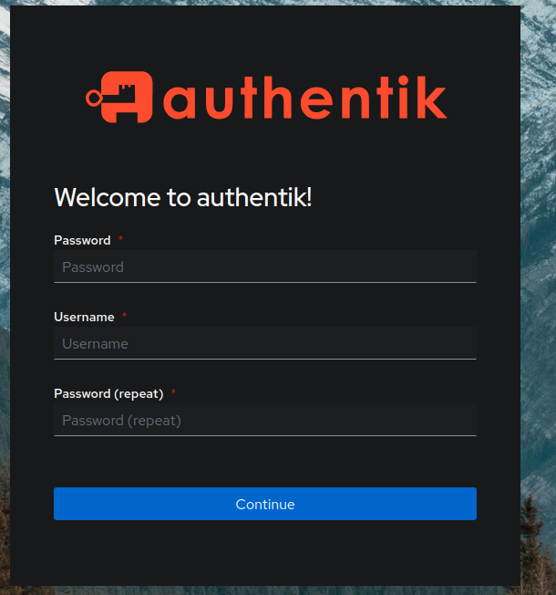

Build Server 5 — Kubernetes, GitOps, FluxCD
Failure and What’s Next
I wanted a custom solution that used FluxCD to deploy Openstack, since I wanted my entire setup, inclduing Openstack, to be tracked in a Git repo (GitOps).
StarlingX OpenStack is installed and managed as an FluxCD application.
Now, StarlingX, sadly, is not GitOps OpenStack. Configurations to the OpenStack application are done via the command line, or via helm value files. Perhaps I can clone the flux repo they use, but truthfully, I’m not going to worry about it for now.
I would like an OpenStack deployment up shortly, and while this project is fun (and definitely possible it seems), it is taking too long.
Background & Goals
Since I got literally no work done on my server, I think it would be prudent to scale down. Rather than opting for a larger option.
In the order I want, here are concrete goals:
- Syncthing: (I need this in order to sync files between my two laptops)
- Oauth2/Openid/Ldap (Kanidm or Authentik)
- I might switch to Kanidm from authentik as my authentication server, as it seems a lot simpler… but it doesn’t seem to support invites
- Virtual Machine host with a web UI that I can give out to others. I’m currently looking at Incus or Ovirt.
I recently learned that Ovirt was still maintained, and it seems to be feature complete. It contains every feature I want, like oauth2 authentication, port security, and a web UI. Although, due to Red Hat abandoning the project, it likely wont’ get beyond feature updates, and instead just get bug and security updates, the software does what I want it to do.
Software Selection
Virtual Machine Manager
Incus: * Authentication - Openid connection * Authorization - Openfga authorization - Do I have to create a project for each user? (seems to be no… Incus can be configured to dynamically create projects for all users in a specific user group) - What is the difference between the varios levels of authority * Port security - Can be overrided on a per instance basis… but how can I make this an unchangable default?
Authentication
I’m currently deciding between kanidm and authentik.
Here is an authentik on kubernetes with fluxcd guide I foudn.
Testing Incus
So, Incus is only packaged in Debian backports. The first step is to add those. After that, apt update, apt upgrade and apt install incus-tools incus incus-agent incus-client.
Then, to initialize incus, first steps documentation.
RKE2 Try 2
I uninstalled RKE2, but I want to redeploy my services on it again.
curl -sfL https://get.rke2.io | sudo sh - (for some reason it crashed and didn’t start when I ran it in a root machinectl session)
I then copied over /etc/rancher/rke2/rke2.yaml to ~/.kube/config on my local machine, in order to configure kubernetes from my local machine.
Dynamic IP Issues
So apparently kubernetes, by default, can’t handle dynamic ip addressed. It crashes when I attempt to start it, because my ip address changed.
At the same time, my dynamic dns updater stopped working. I think it’s because the porkbun API changed, but my container did not update, as I did not have container auto update enabled. (1/28/2025)
So it’s clear that dynamic ip/dns must be done from inside kubernetes. But it looks like rke2/k3s doesn’t have much support for dynamically changing ip addresses, instead requiring you to manually change it via a command line flag. Another stackoverflow post claims that there is no way to do DNS, but a github issue says that the function that the stackoverflow post is referencing is not used except beyond generating .kubeconfigs.
I also found 1, 2, 3 sources on using dynamic DNS, but they all work by assigning having the server behind a router, where the server itself doesn’t have dynamic ip address.
However, there is something interesting: My server’s main ethernet port retains the same IP addresss it started with. This issue was caused by NetworkManager attempting to give my weird veth setup an ip address, which the rest of services on the server began to think that was the server’s main ip address. I am considering simply not handling the fact that Kubernetes cannot handle dynamic ip addresses, since my server seems to get a constant ip address.
I do, however, have to fix dynamic dns. The issue was that the dynamic dns updater container did not auto update, and I need to fix that with podman.
But taking a quick look at the relevant docs, it seems like podman only supports auto updates in the background if a systemd quadlet is used. Debian Linux does not have recent enough version of podman to have this feature.
Wait, I just realized that I don’t actually need dynamic DNS. Since my IP address will not change, I can just not bother with this.
FluxCD
Now, I also realized that git can work over ssh. So I have a git repo, called fleet-charts, located on my server, which I will access from my laptop via ssh.
[moonpie@lizard vscode]$ flux bootstrap git --url ssh://moonpie@moonpiedumpl.ing/fleet-charts --branch=main --private-key-file=/home/moonpie/.ssh/moonstack
► cloning branch "main" from Git repository "ssh://moonpie@moonpiedumpl.ing/fleet-charts"
⚠️ clone failure: unable to clone: repository not found: git repository: 'ssh://moonpie@moonpiedumpl.ing/fleet-charts'
⚠️ clone failure: unable to clone: repository not found: git repository: 'ssh://moonpie@moonpiedumpl.ing/fleet-charts'
✗ failed to clone repository: unable to clone: repository not found: git repository: 'ssh://moonpie@moonpiedumpl.ing/fleet-chartsI find this odd, because ssh works normally:
[moonpie@lizard vscode]$ ssh moonpie@moonpiedumpl.ing -i /home/moonpie/.ssh/moonstack
moonpie@thoth:~$[moonpie@lizard vscode]$ flux bootstrap git --url ssh://moonpie@moonpiedumpl.ing:22/home/moonpie/fleet-charts --branch=main --private-key-file=/home/moonpie/.ssh/moonstack --verbose
► cloning branch "main" from Git repository "ssh://moonpie@moonpiedumpl.ing:22/home/moonpie/fleet-charts"
✔ cloned repository
► generating component manifests
✔ generated component manifests
✔ committed component manifests to "main" ("a69831db70bea88e9ebc9810b78a33831929793c")
► pushing component manifests to "ssh://moonpie@moonpiedumpl.ing:22/home/moonpie/fleet-charts"
► installing components in "flux-system" namespaceSo it looks like I must use an absolute path, and cannot use “~” for relative patths. Or maybe I can use the $HOME environment variable.
But I actually don’t like this setup. I uninstalled flux, and I want to redeploy it, but wish ssh on a different port instead. I want port 22 on this server to be availble for the forgejo ssh service, rather than to be a the administrative ssh service. I’m going to change ssh to port 22022 in order to avoid conflicts with other services.
Show install command
[moonpie@lizard vscode]$ flux bootstrap git --url ssh://moonpie@moonpiedumpl.ing:22022/home/moonpie/fleet-charts --branch=main --private-key-file=/home/moonpie/.ssh/moonstack --verbose
► cloning branch "main" from Git repository "ssh://moonpie@moonpiedumpl.ing:22022/home/moonpie/fleet-charts"
✔ cloned repository
► generating component manifests
✔ generated component manifests
✔ component manifests are up to date
► installing components in "flux-system" namespace
✔ installed components
✔ reconciled components
► determining if source secret "flux-system/flux-system" exists
► generating source secret
✔ public key: ssh-rsa AAAAB3NzaC1yc2EAAAADAQABAAABgQCelSERwSNpguy4f2oqrpkPgtq3MT7iKY7fVnofpp72hqdfLH4Z0i34HFy8vXKPL1aKd07HNiMFPujG8E/lE/pb3W5sSNkJPh//YZRz2SlZo7Mh2tkBDLe3Ap8GQgJk/jJHMoCS7YQudT4rAi/vNBuHvMBaFCjXBLqwbaoRBxm5t7hiNFi1I9cSdrIP8v6fubv2VbWV72kiwq/IQeJkURFN9UZJFQ6/Dd6os4ZZg3IEY+EVCpkOyi8d8KnS8fnd8vMk/96jl8mBqRk8ZCsBu6qRbs3HfT6FqCuIgIblxixhrpVmJRJ8cJzMGT5I8deuTPZQ4gPNYYNdxkHW8oztISx0Jql15LtgeJi1iQMwj3ZqIEXPxbgWYZc57jodGvdo7PQTAa3PXOopIJrbmQNi6T2OLwgjidWDgYs7gDJdmAFv52g8zeRh7HyO83yCC7IC1MXodLd9zJinvyBRg5DAdKQnW7zTbcEDsUSGgEI+LQdShRcShmnBzDtJMs2oQujLOaM=
Please give the key access to your repository: y
► applying source secret "flux-system/flux-system"
✔ reconciled source secret
► generating sync manifests
✔ generated sync manifests
✔ committed sync manifests to "main" ("e3f5512df167ca2bc974428cff0dc17787d713f1")
► pushing sync manifests to "ssh://moonpie@moonpiedumpl.ing:22022/home/moonpie/fleet-charts"
► applying sync manifests
✔ reconciled sync configuration
◎ waiting for GitRepository "flux-system/flux-system" to be reconciled
✔ GitRepository reconciled successfully
◎ waiting for Kustomization "flux-system/flux-system" to be reconciled
✔ Kustomization reconciled successfully
► confirming components are healthy
✔ helm-controller: deployment ready
✔ kustomize-controller: deployment ready
✔ notification-controller: deployment ready
✔ source-controller: deployment ready
✔ all components are healthyAnd just like that, fluxcd is installed.
flux suspend source git flux-system pauses flux’s reconciliation with the git repo. This allows me to test applying resources with kubectl apply -f, before I commit to git.
flux resume source git flux-system resumes flux’s reconciliation.
Reverse Proxy (Traefik, then Nginx)
The first step of my cluster should be my reverse proxy, as an ingress. This exposes basically all of my services.
The flux example of helm page actually has an example where they set up helm.
[moonpie@lizard home-manager]$ kubectl version
Client Version: v1.30.2
Kustomize Version: v5.0.4-0.20230601165947-6ce0bf390ce3
The connection to the server localhost:8080 was refused - did you specify the right host or port?
[moonpie@lizard home-manager]$ git remote -v^C
[moonpie@lizard home-manager]$ flux create source helm traefik --url https://helm.traefik.io/traefik --namespace traefik
✚ generating HelmRepository source
► applying HelmRepository source
✗ namespaces "traefik" not found
[moonpie@lizard home-manager]$ flux create source helm traefik --url https://helm.traefik.io/traefik
✚ generating HelmRepository source
► applying HelmRepository source
✔ source created
◎ waiting for HelmRepository source reconciliation
✔ HelmRepository source reconciliation completed
✔ fetched revision: sha256:48513aa497c9bf46e3053d2aef7e4d184d6df2165389a6024b03f8565fd501e8
[moonpie@lizard home-manager]$ flux create helmrelease my-traefik --chart traefik --source HelmRepository/traefik
✚ generating HelmRelease
► applying HelmRelease
✔ HelmRelease created
◎ waiting for HelmRelease reconciliation
✗ context deadline exceededIs this a failure? I can’t tell?
[moonpie@lizard fleet-charts]$ flux get sources all
NAME REVISION SUSPENDED READY MESSAGE
gitrepository/flux-system main@sha1:e3f5512d False True stored artifact for revision 'main@sha1:e3f5512d'
NAME REVISION SUSPENDED READY MESSAGE
helmrepository/traefik sha256:48513aa4 False True stored artifact: revision 'sha256:48513aa4'
NAME REVISION SUSPENDED READY MESSAGE
helmchart/flux-system-my-traefik 31.0.0 False True pulled 'traefik' chart with version '31.0.0'
[moonpie@lizard fleet-charts]$ kubectl get pods --all-namespaces
NAMESPACE NAME READY STATUS RESTARTS AGE
flux-system helm-controller-76dff45854-pj876 1/1 Running 0 3d1h
flux-system kustomize-controller-6bc5d5b96-jzj24 1/1 Running 0 3d1h
flux-system my-traefik-5b4fbbd9c8-2rck9 1/1 Running 0 7m24s
flux-system notification-controller-7f5cd7fdb8-7db4q 1/1 Running 0 3d1h
flux-system source-controller-54c89dcbf6-p2gd6 1/1 Running 0 3d1h
kube-system cloud-controller-manager-thoth 1/1 Running 0 3d3h
kube-system etcd-thoth 1/1 Running 0 3d3h
kube-system helm-install-rke2-canal-hmjrm 0/1 Completed 0 3d3h
kube-system helm-install-rke2-coredns-m2jwz 0/1 Completed 0 3d3h
kube-system helm-install-rke2-ingress-nginx-cszxd 0/1 Completed 0 3d3h
kube-system helm-install-rke2-metrics-server-gkqfd 0/1 Completed 0 3d3h
kube-system helm-install-rke2-snapshot-controller-crd-ztz6n 0/1 Completed 0 3d3h
kube-system helm-install-rke2-snapshot-controller-f2zfz 0/1 Completed 0 3d3h
kube-system helm-install-rke2-snapshot-validation-webhook-52kj2 0/1 Completed 0 3d3h
kube-system kube-apiserver-thoth 1/1 Running 0 3d3h
kube-system kube-controller-manager-thoth 1/1 Running 0 3d3h
kube-system kube-proxy-thoth 1/1 Running 0 3d3h
kube-system kube-scheduler-thoth 1/1 Running 0 3d3h
kube-system rke2-canal-gb7bx 2/2 Running 0 3d3h
kube-system rke2-coredns-rke2-coredns-6bb85f9dd8-zzqlv 1/1 Running 0 3d3h
kube-system rke2-coredns-rke2-coredns-autoscaler-7b9c797d64-4bwcb 1/1 Running 0 3d3h
kube-system rke2-ingress-nginx-controller-ct4mj 1/1 Running 0 3d3h
kube-system rke2-metrics-server-868fc8795f-5t6v6 1/1 Running 0 3d3h
kube-system rke2-snapshot-controller-7dcf5d5b46-5dtvt 1/1 Running 0 3d3h
kube-system rke2-snapshot-validation-webhook-bf7bbd6fc-gqqgr 1/1 Running 0 3d3h
[moonpie@lizard fleet-charts]$ git pull
Already up to date.
[moonpie@lizard fleet-charts]$Another weird thing is that no changes were made to the git repo where I was tracking flux… but changes were made to my cluster. I thought the point of flux was that all state was in the git repo, but that doesn’t seem to be the case here.
Oh. Oops. RKE2 comes with an nginx controller already. I may have to remove that if I want traefik as an ingress controller.
Thankfully, it doesn’t appear to be too hard.
/etc/rancher/rke2/config.yaml
disable:
- rke2-coredns
- rke2-ingress-nginxAnd now, those services are disabled.
Oh, and I was wrong, there are files in the git repo now.
[moonpie@lizard fleet-charts]$ ls *
begin.md
flux-system:
gotk-components.yaml gotk-sync.yaml kustomization.yaml[moonpie@lizard flux-system]$ wc -l *
12385 gotk-components.yaml
27 gotk-sync.yaml
5 kustomization.yaml
12417 totalUuuh… That’s a lot of lines. I think that gotk-components.yaml file has basically all of the fluxcd components stored and tracked in there.
[moonpie@lizard flux-system]$ cat * | grep traefik
[moonpie@lizard flux-system]$And… no mentions of traefik? It’s obviously stored in the cluster, given something related shows up when I observe the kubernetes pods, but nothing appears in the git repo.
[moonpie@lizard flux-system]$ flux get sources all -A
NAMESPACE NAME REVISION SUSPENDED READY MESSAGE
flux-system gitrepository/flux-system main@sha1:e3f5512d False False failed to checkout and determine revision: unable to list remote for 'ssh://moonpie@moonpiedumpl.ing:22022/home/moonpie/fleet-charts': dial tcp: lookup moonpiedumpl.ing on 10.43.0.10:53: read udp 10.42.0.22:38747->10.43.0.10:53: i/o timeoutOkay, it appears that flux is having trouble accessing my git repo. I found a relevant github issue, and it looks like a DNS problem. It looks, since I disabled the Kubernetes CoreDNS service, DNS wasn’t working inside my cluster, preventing it from accessing my domain name.
So:
/etc/rancher/rke2/config.yaml
disable:
# Yeah so apparently this was kind of important.
# - rke2-coredns
- rke2-ingress-nginxAnd with this, flux bootstrap works properly:
[moonpie@lizard vscode]$ flux bootstrap git --url ssh://moonpie@moonpiedumpl.ing:22022/home/moonpie/flux-config --branch=main --private-key-file=/home/moonpie/.ssh/moonstack --verbose --insecure-skip-tls-verify
► cloning branch "main" from Git repository "ssh://moonpie@moonpiedumpl.ing:22022/home/moonpie/flux-config"
✔ cloned repository
...
...
✔ reconciled sync configuration
◎ waiting for GitRepository "flux-system/flux-system" to be reconciled
✔ GitRepository reconciled successfully
◎ waiting for Kustomization "flux-system/flux-system" to be reconciled
✔ Kustomization reconciled successfully
► confirming components are healthy
✔ helm-controller: deployment ready
✔ kustomize-controller: deployment ready
✔ notification-controller: deployment ready
✔ source-controller: deployment ready
✔ all components are healthyI also changed the name of the git repo to flux-config.
I also realized that the flux-system repo is the configs of the flux-system namespace. Meaning, each directory should be a namespace? However, I don’t think I’m going to use many namespaces, they seem like extra complexity designed for multi-project or multi-user kubernetes clusters.
[moonpie@lizard vscode]$ flux create source helm traefik --url https://helm.traefik.io/traefik
✚ generating HelmRepository source
► applying HelmRepository source
✔ source created
◎ waiting for HelmRepository source reconciliation
✔ HelmRepository source reconciliation completed
✔ fetched revision: sha256:48513aa497c9bf46e3053d2aef7e4d184d6df2165389a6024b03f8565fd501e8
Events: <none>
[moonpie@lizard flux-config]$ flux create helmrelease traefik --chart traefik --source HelmRepository/traefik --chart-version 31.0.0 --verbose
✚ generating HelmRelease
► applying HelmRelease
✔ HelmRelease updated
◎ waiting for HelmRelease reconciliation
^CDespite my impatience, it did render, and Traefik did deploy.
[moonpie@lizard flux-system]$ kubectl get pods -n flux-system
NAME READY STATUS RESTARTS AGE
helm-controller-76dff45854-g8tff 1/1 Running 0 3h4m
kustomize-controller-6bc5d5b96-sdzql 1/1 Running 0 3h4m
notification-controller-7f5cd7fdb8-v9672 1/1 Running 0 3h4m
source-controller-54c89dcbf6-kjjsb 1/1 Running 0 3h4m
traefik-6f6c897d6-j7g8z 1/1 Running 0 9m34sBut… no changes were made to the git repo? I’m confused, as I thought the point of flux was that all changes would be version controlled.
I started to follow the flux troubleshooting guide.
[moonpie@lizard moonpiedumplings.github.io]$ kubectl describe helmrelease traefik -n flux-system
Name: traefik
Namespace: flux-system
...
...
Status:
Conditions:
Last Transition Time: 2024-09-17T20:16:28Z
Message: Failed to install after 1 attempt(s)
Observed Generation: 1
Reason: RetriesExceeded
Status: True
Type: Stalled
Last Transition Time: 2024-09-17T20:16:28Z
Message: Helm install failed for release flux-system/traefik with chart traefik@31.0.0: client rate limiter Wait returned an error: context deadline
...
...
2024-09-17T20:11:27.315654788Z: CustomResourceDefinition serverstransporttcps.traefik.io is already present. Skipping.
2024-09-17T20:11:27.315658603Z: creating 1 resource(s)
2024-09-17T20:11:27.324448937Z: CustomResourceDefinition tlsoptions.traefik.io is already present. Skipping.
2024-09-17T20:11:27.324452859Z: creating 1 resource(s)
2024-09-17T20:11:27.332385521Z: CustomResourceDefinition tlsstores.traefik.io is already present. Skipping.
2024-09-17T20:11:27.332389484Z: creating 1 resource(s)
2024-09-17T20:11:27.348449663Z: CustomResourceDefinition traefikservices.traefik.io is already present. Skipping.
2024-09-17T20:11:27.85810682Z: creating 6 resource(s)
2024-09-17T20:11:27.904853344Z: beginning wait for 6 resources with timeout of 5m0s
2024-09-17T20:11:27.909519301Z: Service does not have load balancer ingress IP address: flux-system/traefik
2024-09-17T20:16:25.90942954Z: : flux-system/traefik (148 duplicate lines omitted)So it seems I’m missing a “load balancer ingress IP address”.
I also find it odd that the relevant configs are not automatically added to the git repo. I decided to experiment with adding files to the git repo, rather than using the flux cli.
[moonpie@lizard flux-config]$ ls traefik/
config.yaml source.yaml[moonpie@lizard traefik]$ cat config.yaml
---
apiVersion: helm.toolkit.fluxcd.io/v2
kind: HelmRelease
metadata:
name: traefik
namespace: flux-system
spec:
chart:
spec:
chart: traefik
reconcileStrategy: ChartVersion
sourceRef:
kind: HelmRepository
name: traefik
version: 31.0.0
interval: 1m0s
values:
service:
type: LoadBalancer
[moonpie@lizard traefik]$ cat source.yaml
---
apiVersion: source.toolkit.fluxcd.io/v1
kind: HelmRepository
metadata:
name: traefik
namespace: flux-system
spec:
interval: 1m0s
url: https://traefik.github.io/charts/This actually deploys properly without errors, so it seems that the flux git repo organization is arbitrary and for the purposes of maknig it readable for humans, and is not actually necessary.
It probably doesn’t error because I have the service: type: LoadBalancer, but it doesn’t actually use any ports or seem to be deployed in a useful manner.
Also:
[moonpie@lizard traefik]$ kubectl get -n flux-system service
NAMESPACE NAME TYPE CLUSTER-IP EXTERNAL-IP PORT(S) AGE
default kubernetes ClusterIP 10.43.0.1 <none> 443/TCP 6d20h
flux-system notification-controller ClusterIP 10.43.164.182 <none> 80/TCP 2d14h
flux-system source-controller ClusterIP 10.43.58.240 <none> 80/TCP 2d14h
flux-system traefik LoadBalancer 10.43.109.84 <pending> 80:30239/TCP,443:31645/TCP 18h
flux-system webhook-receiver ClusterIP 10.43.226.89 <none> 80/TCP 2d14hIt seems that traefik comes with a load balancer type service, but it doesn’t actually get an external ip. Why?
After more research, it seems that a load balancer is actually needed in order to use a load balancer type service. On cloud instances, the cloud server acts as a load balancer and can do this. On bare metal instances, users are on their own. The most common deployment for a bare metal load balancer seems to be metallb, but that doesn’t really work for me, as I only have ONE ip address and it looks like metallb expects you to be able to ask for more on the spot somehow.
(well… technically, I can use dhcp to ask for more ip addresses, but it doesn’t look like metallb supports that use case, only something different)
Instead, I found klipper. Klipper is an extremely simple load balancing service built into K3s — but disabled in RKE2 by default. All it does is use iptables/nftables to forward traffic from ports you want the load balancer to forward from, to inside the cluster.
RKE2 can deply klipper by using an install flag… and it seems, only via an install flag. There doesn’t seem to be another way to install klipper, no helm charts or anything… it seems to just be a bash script in a docker container.
So, it looks like I need to uninstall my cluster and redeploy it…
curl -sfL https://get.rke2.io --output install.sh
chmod +x install.sh
./install.sh --serviceLB # with root privilegesBut, after I reinstalled flux:
[moonpie@lizard traefik]$ flux get all -n flux-system
NAME REVISION SUSPENDED READY MESSAGE
gitrepository/flux-system main@sha1:819432fd False True stored artifact for revision 'main@sha1:819432fd'
NAME REVISION SUSPENDED READY MESSAGE
helmrepository/traefik sha256:1c0fc56c False True stored artifact: revision 'sha256:1c0fc56c'
NAME REVISION SUSPENDED READY MESSAGE
helmchart/flux-system-traefik 31.0.0 False True pulled 'traefik' chart with version '31.0.0'
NAME REVISION SUSPENDED READY MESSAGE
helmrelease/traefik 31.0.0 False False Helm install failed for release flux-system/traefik with chart traefik@31.0.0: Unable to continue with install: Service "traefik" in namespace "flux-system" exists and cannot be imported into the current release: invalid ownership metadata; label validation error: missing key "app.kubernetes.io/managed-by": must be set to "Helm"; annotation validation error: missing key "meta.helm.sh/release-name": must be set to "traefik"; annotation validation error: missing key "meta.helm.sh/release-namespace": must be set to "flux-system"
NAME REVISION SUSPENDED READY MESSAGE
kustomization/flux-system main@sha1:819432fd False True Applied revision: main@sha1:819432fdroot@thoth:/usr/local/bin# ls
rke2 rke2-killall.sh rke2-uninstall.sh
root@thoth:/usr/local/bin# rke2
rke2 rke2-killall.sh rke2-uninstall.sh
root@thoth:/usr/local/bin# rke2
rke2 rke2-killall.sh rke2-uninstall.sh
root@thoth:/usr/local/bin# rke2 server --help
NAME:
rke2 server - Run management server
USAGE:
rke2 server [OPTIONS]
OPTIONS:
--config FILE, -c FILE (config) Load configuration from FILE (default: "/etc/rancher/rke2/config.yaml") [$RKE2_CONFIG_FILE]
--debug (logging) Turn on debug logs [$RKE2_DEBUG]
--bind-address value (listener) rke2 bind address (default: 0.0.0.0)
--advertise-address value (listener) IPv4/IPv6 address that apiserver uses to advertise to members of the cluster (default: node-external-ip/node-ip)
--tls-san value (listener) Add additional hostnames or IPv4/IPv6 addresses as Subject Alternative Names on the server TLS cert
--tls-san-security (listener) Protect the server TLS cert by refusing to add Subject Alternative Names not associated with the kubernetes apiserver service, s
--data-dir value, -d value (data) Folder to hold state (default: "/var/lib/rancher/rke2") [$RKE2_DATA_DIR]
--cluster-cidr value (networking) IPv4/IPv6 network CIDRs to use for pod IPs (default: 10.42.0.0/16)
--service-cidr value (networking) IPv4/IPv6 network CIDRs to use for service IPs (default: 10.43.0.0/16)
--service-node-port-range value (networking) Port range to reserve for services with NodePort visibility (default: "30000-32767")
--cluster-dns value (networking) IPv4 Cluster IP for coredns service. Should be in your service-cidr range (default: 10.43.0.10)
--cluster-domain value (networking) Cluster Domain (default: "cluster.local")
--egress-selector-mode value (networking) One of 'agent', 'cluster', 'pod', 'disabled' (default: "agent")
--servicelb-namespace value (networking) Namespace of the pods for the servicelb component (default: "kube-system")
--write-kubeconfig value, -o value (client) Write kubeconfig for admin client to this file [$RKE2_KUBECONFIG_OUTPUT]
--write-kubeconfig-mode value (client) Write kubeconfig with this mode [$RKE2_KUBECONFIG_MODE]
--write-kubeconfig-group value (client) Write kubeconfig with this group [$RKE2_KUBECONFIG_GROUP]
--helm-job-image value (helm) Default image to use for helm jobs
--token value, -t value (cluster) Shared secret used to join a server or agent to a cluster [$RKE2_TOKEN]
--token-file value (cluster) File containing the token [$RKE2_TOKEN_FILE]
--agent-token value (cluster) Shared secret used to join agents to the cluster, but not servers [$RKE2_AGENT_TOKEN]
--agent-token-file value (cluster) File containing the agent secret [$RKE2_AGENT_TOKEN_FILE]
--server value, -s value (cluster) Server to connect to, used to join a cluster [$RKE2_URL]
--cluster-reset (cluster) Forget all peers and become sole member of a new cluster [$RKE2_CLUSTER_RESET]
--cluster-reset-restore-path value (db) Path to snapshot file to be restored
--kube-apiserver-arg value (flags) Customized flag for kube-apiserver process
--etcd-arg value (flags) Customized flag for etcd process
--kube-controller-manager-arg value (flags) Customized flag for kube-controller-manager process
--kube-scheduler-arg value (flags) Customized flag for kube-scheduler process
--kube-cloud-controller-manager-arg value (flags) Customized flag for kube-cloud-controller-manager process
--datastore-endpoint value (db) Specify etcd, NATS, MySQL, Postgres, or SQLite (default) data source name [$RKE2_DATASTORE_ENDPOINT]
--datastore-cafile value (db) TLS Certificate Authority file used to secure datastore backend communication [$RKE2_DATASTORE_CAFILE]
--datastore-certfile value (db) TLS certification file used to secure datastore backend communication [$RKE2_DATASTORE_CERTFILE]
--datastore-keyfile value (db) TLS key file used to secure datastore backend communication [$RKE2_DATASTORE_KEYFILE]
--etcd-expose-metrics (db) Expose etcd metrics to client interface. (default: false)
--etcd-disable-snapshots (db) Disable automatic etcd snapshots
--etcd-snapshot-name value (db) Set the base name of etcd snapshots (default: etcd-snapshot-<unix-timestamp>) (default: "etcd-snapshot")
--etcd-snapshot-schedule-cron value (db) Snapshot interval time in cron spec. eg. every 5 hours '0 */5 * * *' (default: "0 */12 * * *")
--etcd-snapshot-retention value (db) Number of snapshots to retain (default: 5)
--etcd-snapshot-dir value (db) Directory to save db snapshots. (default: ${data-dir}/db/snapshots)
--etcd-snapshot-compress (db) Compress etcd snapshot
--etcd-s3 (db) Enable backup to S3
--etcd-s3-endpoint value (db) S3 endpoint url (default: "s3.amazonaws.com")
--etcd-s3-endpoint-ca value (db) S3 custom CA cert to connect to S3 endpoint
--etcd-s3-skip-ssl-verify (db) Disables S3 SSL certificate validation
--etcd-s3-access-key value (db) S3 access key [$AWS_ACCESS_KEY_ID]
--etcd-s3-secret-key value (db) S3 secret key [$AWS_SECRET_ACCESS_KEY]
--etcd-s3-bucket value (db) S3 bucket name
--etcd-s3-region value (db) S3 region / bucket location (optional) (default: "us-east-1")
--etcd-s3-folder value (db) S3 folder
--etcd-s3-proxy value (db) Proxy server to use when connecting to S3, overriding any proxy-releated environment variables
--etcd-s3-config-secret value (db) Name of secret in the kube-system namespace used to configure S3, if etcd-s3 is enabled and no other etcd-s3 options are set
--etcd-s3-insecure (db) Disables S3 over HTTPS
--etcd-s3-timeout value (db) S3 timeout (default: 5m0s)
--disable value (components) Do not deploy packaged components and delete any deployed components (valid items: rke2-coredns, rke2-metrics-server, rke2-sna
--disable-scheduler (components) Disable Kubernetes default scheduler
--disable-cloud-controller (components) Disable rke2 default cloud controller manager
--disable-kube-proxy (components) Disable running kube-proxy
--embedded-registry (experimental/components) Enable embedded distributed container registry; requires use of embedded containerd; when enabled agents will als
--supervisor-metrics (experimental/components) Enable serving rke2 internal metrics on the supervisor port; when enabled agents will also listen on the supervis
--node-name value (agent/node) Node name [$RKE2_NODE_NAME]
--with-node-id (agent/node) Append id to node name
--node-label value (agent/node) Registering and starting kubelet with set of labels
--node-taint value (agent/node) Registering kubelet with set of taints
--image-credential-provider-bin-dir value (agent/node) The path to the directory where credential provider plugin binaries are located (default: "/var/lib/rancher/credentialprovider
--image-credential-provider-config value (agent/node) The path to the credential provider plugin config file (default: "/var/lib/rancher/credentialprovider/config.yaml")
--container-runtime-endpoint value (agent/runtime) Disable embedded containerd and use the CRI socket at the given path; when used with --docker this sets the docker socket p
--default-runtime value (agent/runtime) Set the default runtime in containerd
--disable-default-registry-endpoint (agent/containerd) Disables containerd's fallback default registry endpoint when a mirror is configured for that registry
--snapshotter value (agent/runtime) Override default containerd snapshotter (default: "overlayfs")
--private-registry value (agent/runtime) Private registry configuration file (default: "/etc/rancher/rke2/registries.yaml")
--system-default-registry value (agent/runtime) Private registry to be used for all system images [$RKE2_SYSTEM_DEFAULT_REGISTRY]
--node-ip value, -i value (agent/networking) IPv4/IPv6 addresses to advertise for node
--node-external-ip value (agent/networking) IPv4/IPv6 external IP addresses to advertise for node
--resolv-conf value (agent/networking) Kubelet resolv.conf file [$RKE2_RESOLV_CONF]
--kubelet-arg value (agent/flags) Customized flag for kubelet process
--kube-proxy-arg value (agent/flags) Customized flag for kube-proxy process
--protect-kernel-defaults (agent/node) Kernel tuning behavior. If set, error if kernel tunables are different than kubelet defaults.
--enable-pprof (experimental) Enable pprof endpoint on supervisor port
--selinux (agent/node) Enable SELinux in containerd [$RKE2_SELINUX]
--lb-server-port value (agent/node) Local port for supervisor client load-balancer. If the supervisor and apiserver are not colocated an additional port 1 less than this port will also be used for the apiserver client load-balancer. (default: 6444) [$RKE2_LB_SERVER_PORT]
--cni value (networking) CNI Plugins to deploy, one of none, calico, canal, cilium, flannel; optionally with multus as the first value to enable the multus meta-plugin (default: canal) [$RKE2_CNI]
--ingress-controller value (networking) Ingress Controllers to deploy, one of none, ingress-nginx, traefik; the first value will be set as the default ingress class (default: ingress-nginx) [$RKE_INGRESS_CONTROLLER]
--enable-servicelb (components) Enable rke2 default cloud controller manager's service controller [$RKE2_ENABLE_SERVICELB]
--kube-apiserver-image value (image) Override image to use for kube-apiserver [$RKE2_KUBE_APISERVER_IMAGE]
--kube-controller-manager-image value (image) Override image to use for kube-controller-manager [$RKE2_KUBE_CONTROLLER_MANAGER_IMAGE]
--cloud-controller-manager-image value (image) Override image to use for cloud-controller-manager [$RKE2_CLOUD_CONTROLLER_MANAGER_IMAGE]
--kube-proxy-image value (image) Override image to use for kube-proxy [$RKE2_KUBE_PROXY_IMAGE]
--kube-scheduler-image value (image) Override image to use for kube-scheduler [$RKE2_KUBE_SCHEDULER_IMAGE]
--pause-image value (image) Override image to use for pause [$RKE2_PAUSE_IMAGE]
--runtime-image value (image) Override image to use for runtime binaries (containerd, kubectl, crictl, etc) [$RKE2_RUNTIME_IMAGE]
--etcd-image value (image) Override image to use for etcd [$RKE2_ETCD_IMAGE]
--kubelet-path value (experimental/agent) Override kubelet binary path [$RKE2_KUBELET_PATH]
--cloud-provider-name value (cloud provider) Cloud provider name [$RKE2_CLOUD_PROVIDER_NAME]
--cloud-provider-config value (cloud provider) Cloud provider configuration file path [$RKE2_CLOUD_PROVIDER_CONFIG]
--profile value (security) Validate system configuration against the selected benchmark (valid items: cis) [$RKE2_CIS_PROFILE]
--audit-policy-file value (security) Path to the file that defines the audit policy configuration [$RKE2_AUDIT_POLICY_FILE]
--pod-security-admission-config-file value (security) Path to the file that defines Pod Security Admission configuration [$RKE2_POD_SECURITY_ADMISSION_CONFIG_FILE]
--control-plane-resource-requests value (components) Control Plane resource requests [$RKE2_CONTROL_PLANE_RESOURCE_REQUESTS]
--control-plane-resource-limits value (components) Control Plane resource limits [$RKE2_CONTROL_PLANE_RESOURCE_LIMITS]
--control-plane-probe-configuration value (components) Control Plane Probe configuration [$RKE2_CONTROL_PLANE_PROBE_CONFIGURATION]
--kube-apiserver-extra-mount value (components) kube-apiserver extra volume mounts [$RKE2_KUBE_APISERVER_EXTRA_MOUNT]
--kube-scheduler-extra-mount value (components) kube-scheduler extra volume mounts [$RKE2_KUBE_SCHEDULER_EXTRA_MOUNT]
--kube-controller-manager-extra-mount value (components) kube-controller-manager extra volume mounts [$RKE2_KUBE_CONTROLLER_MANAGER_EXTRA_MOUNT]
--kube-proxy-extra-mount value (components) kube-proxy extra volume mounts [$RKE2_KUBE_PROXY_EXTRA_MOUNT]
--etcd-extra-mount value (components) etcd extra volume mounts [$RKE2_ETCD_EXTRA_MOUNT]
--cloud-controller-manager-extra-mount value (components) cloud-controller-manager extra volume mounts [$RKE2_CLOUD_CONTROLLER_MANAGER_EXTRA_MOUNT]
--kube-apiserver-extra-env value (components) kube-apiserver extra environment variables [$RKE2_KUBE_APISERVER_EXTRA_ENV]
--kube-scheduler-extra-env value (components) kube-scheduler extra environment variables [$RKE2_KUBE_SCHEDULER_EXTRA_ENV]
--kube-controller-manager-extra-env value (components) kube-controller-manager extra environment variables [$RKE2_KUBE_CONTROLLER_MANAGER_EXTRA_ENV]
--kube-proxy-extra-env value (components) kube-proxy extra environment variables [$RKE2_KUBE_PROXY_EXTRA_ENV]
--etcd-extra-env value (components) etcd extra environment variables [$RKE2_ETCD_EXTRA_ENV]
--cloud-controller-manager-extra-env value (components) cloud-controller-manager extra environment variables [$RKE2_CLOUD_CONTROLLER_MANAGER_EXTRA_ENV]So, it seems that the –servicelb system is enabled in the rke2 command line, rather than in the install script.
So, I used systemctl edit rke2-server.service to create an override file for the systemd service.
### Editing /etc/systemd/system/rke2-server.service.d/override.conf
### Anything between here and the comment below will become the new contents of the file
[Service]
ExecStart=
ExecStart=/usr/local/bin/rke2 server --servicelb
### Lines below this comment will be discarded
### /usr/local/lib/systemd/system/rke2-server.service
# [Unit]
# Description=Rancher Kubernetes Engine v2 (server)
# Documentation=https://github.com/rancher/rke2#readme
# Wants=network-online.target
# After=network-online.target
# Conflicts=rke2-agent.service
#
# [Install]
# WantedBy=multi-user.target
#
# [Service]
# Type=notify
# EnvironmentFile=-/etc/default/%N
# EnvironmentFile=-/etc/sysconfig/%N
# EnvironmentFile=-/usr/local/libAnd after restarting the kubernetes service, and reconciling, traefik deploys successfully!
[moonpie@lizard traefik]$ flux get all
NAME REVISION SUSPENDED READY MESSAGE
...
...
NAME REVISION SUSPENDED READY MESSAGE
helmrelease/traefik 31.0.0 False True Helm install succeeded for release flux-system/traefik.v1 with chart traefik@31.0.0
...
...Except… not really. The port 80 and 443 are not used when I check sudo ss -tulpn, and if I curl either of those ports, it just times out. A relevant github issue says that klipper has some problems with canal, and to enable canal ip forwarding in /etc/cni/net.d/10-canal.conflist.
However, despite doing this, and restarting, the ports are not in use, and the service times out if I try to curl my site.
But, traefik seems to be working, because if I use the kubectl port-forward command to port forward traefik to my local machine, I can curl it.
[moonpie@lizard traefik]$ kubectl port-forward -n flux-system pods/traefik-6f6c897d6-vr78w 8000
Forwarding from 127.0.0.1:8000 -> 8000
Forwarding from [::1]:8000 -> 8000
Handling connection for 8000
# In a different terminal
[moonpie@lizard traefik]$ curl localhost:8000
404 page not foundBut…
[moonpie@lizard traefik]$ kubectl describe -n flux-system svc/traefik
Name: traefik
Namespace: flux-system
Labels: app.kubernetes.io/instance=traefik-flux-system
app.kubernetes.io/managed-by=Helm
app.kubernetes.io/name=traefik
helm.sh/chart=traefik-31.0.0
helm.toolkit.fluxcd.io/name=traefik
helm.toolkit.fluxcd.io/namespace=flux-system
Annotations: meta.helm.sh/release-name: traefik
meta.helm.sh/release-namespace: flux-system
Selector: app.kubernetes.io/instance=traefik-flux-system,app.kubernetes.io/name=traefik
Type: LoadBalancer
IP Family Policy: SingleStack
IP Families: IPv4
IP: 10.43.249.0
IPs: 10.43.249.0
LoadBalancer Ingress: 130.166.90.189
Port: web 80/TCP
TargetPort: 8000/TCP
NodePort: web 30801/TCP
Endpoints: 10.42.0.15:8000
Port: websecure 443/TCP
TargetPort: websecure/TCP
NodePort: websecure 32357/TCP
Endpoints: 10.42.0.15:8443
Session Affinity: None
External Traffic Policy: Clusterroot@thoth:~# curl 10.42.0.15:8000
404 page not foundSo I’m guessing that this is supposed to be forwarded to port 80 on the host, but it isn’t.
[moonpie@lizard traefik]$ kubectl get events --sort-by='.lastTimestamp' -A
NAMESPACE LAST SEEN TYPE REASON OBJECT MESSAGE
...
...
kube-system 9m43s Warning FailedMount pod/helm-install-rke2-canal-jjmwv MountVolume.SetUp failed for volume "content" : object "kube-system"/"chart-content-rke2-canal" not registered
kube-system 5m39s Warning FailedMount pod/helm-install-rke2-canal-jjmwv MountVolume.SetUp failed for volume "values" : object "kube-system"/"chart-values-rke2-canal" not registered
...
...Although an interesting error, it’s possible that this isn’t the error that is irritating me. According to a github issue comment, RKE2 comes wtih “network policies” that can restrict traffic between pods, and that might be the issue.
However, on according to the fluxcd documentation on networkpolicies, fluxcd comes with rules that disallow traffic to the flux-system namepsace by default… which is where I was attempting to deploy my software.
So, after I change the configs to deploy traefik to the kubernetes default namespace:
[moonpie@lizard traefik]$ curl moonpiedumpl.ing
404 page not foundIt works!
Now, I need to find a test service to deploy. I deployed podinfo, because it is a simple web service, used as an example service for fluxcd.
Here was the ingress file that I used to expose it on <podinfo.moonpiedumpl.ing>
podinfo-ingress.yaml
[moonpie@lizard podinfo]$ cat podinfo-ingress.yaml
apiVersion: networking.k8s.io/v1
kind: Ingress
metadata:
name: podinfo
annotations:
traefik.ingress.kubernetes.io/router.entrypoints: web
namespace: default
spec:
rules:
- host: podinfo.moonpiedumpl.ing
http:
paths:
- path: /
pathType: Exact
backend:
service:
name: podinfo
port:
number: 9898 Not really simple, and it was a pain to edit because my editor (Kate), set tabs to 4 spaces, rather than two.
Now, how can I add HTTPS/TLS to this? Although Traefik documents how to enable acme in the first example, however, the documentation on how to add this to each individual site is unclear.
Based on removing the annotation, and testing, it looks like the annoation isn’t needed. Also, it seems that the kubectl explain ingress --recursive explains the “ingress” kubernetes resource, which is above.
However, it seems that Traefik provides an “IngressRoute” resource, which is what they expect you to use for automatic https setups like what I am trying to do. But… I’m hesitant to rely on that, as “IngressRoute” seems to be traefik specific, rather than Ingress, which is general to kubernetes.
Actually, after doing more research, I’ve decided to switch to ingress-nginx. Unlike traefik, it seems to have build in support for external oauth authentication. Although Traefik can do it, it’s not build in, and I would have to use a plugin.
So, this means I’m switching from Traefik to nginx and cert-manager instead.
Nginx/Cert-Manager
I followed the official cert-manager installation guide, but converted it into flux configs.
cert-manager/helmsource.yaml
---
apiVersion: source.toolkit.fluxcd.io/v1
kind: HelmRepository
metadata:
name: cert-manager
namespace: default
spec:
interval: 1m0s
url: https://charts.jetstack.iocert-manager/helmrelease.yaml
---
apiVersion: helm.toolkit.fluxcd.io/v2
kind: HelmRelease
metadata:
name: cert-manager
namespace: default
spec:
chart:
spec:
chart: cert-manager
reconcileStrategy: ChartVersion
sourceRef:
kind: HelmRepository
name: cert-manager
version: v1.16.0
interval: 1m0s
values:
crds:
enabled: trueOne thing that I had to change is the values at the very bottom. It seems that the --set crds.enabled=true in the helm install command options doesn’t work for flux. Instead, I had to seperate it out to what is in the values section above.
I also deployed ingress-nginx:
helmsource.yaml
---
apiVersion: source.toolkit.fluxcd.io/v1
kind: HelmRepository
metadata:
name: ingress-nginx
namespace: default
spec:
interval: 1m0s
url: https://kubernetes.github.io/ingress-nginxhelmrelease.yaml
---
apiVersion: helm.toolkit.fluxcd.io/v2
kind: HelmRelease
metadata:
name: ingress-nginx
namespace: default
spec:
chart:
spec:
chart: ingress-nginx
reconcileStrategy: ChartVersion
sourceRef:
kind: HelmRepository
name: ingress-nginx
# version:
interval: 1m0sAnother thing I had to do was to uninstall traefik:
[moonpie@lizard flux-config]$ kubectl delete helm
helmchartconfigs.helm.cattle.io helmcharts.source.toolkit.fluxcd.io helmrepositories.source.toolkit.fluxcd.io
helmcharts.helm.cattle.io helmreleases.helm.toolkit.fluxcd.io
[moonpie@lizard flux-config]$ kubectl delete helmrepositories.source.toolkit.fluxcd.io traefik
helmrepository.source.toolkit.fluxcd.io "traefik" deletedFor whatever reason, after deleting the traefik files from my git repo, they did not get removed from flux even after reconciling them. But, after this, the install works normally.
However, when I attempt to appy an ingress, I get an error:
Warning: resource ingresses/podinfo is missing the kubectl.kubernetes.io/last-applied-configuration annotation which is required by kubectl apply. kubectl apply should only be used on resources created declaratively by either kubectl create --save-config or kubectl apply. The missing annotation will be patched automatically.
Error from server (InternalError): error when applying patch:
{"metadata":{"annotations":{"kubectl.kubernetes.io/last-applied-configuration":"{\"apiVersion\":\"networking.k8s.io/v1\",\"kind\":\"Ingress\",\"metadata\":{\"annotations\":{},\"name\":\"podinfo\",\"namespace\":\"default\"},\"spec\":{\"rules\":[{\"host\":\"podinfo.moonpiedumpl.ing\",\"http\":{\"paths\":[{\"backend\":{\"service\":{\"name\":\"podinfo\",\"port\":{\"number\":9898}}},\"path\":\"/\",\"pathType\":\"Exact\"}]}}]}}\n"}}}
to:
Resource: "networking.k8s.io/v1, Resource=ingresses", GroupVersionKind: "networking.k8s.io/v1, Kind=Ingress"
Name: "podinfo", Namespace: "default"
for: "podinfo-ingress.yaml": error when patching "podinfo-ingress.yaml": Internal error occurred: failed calling webhook "validate.nginx.ingress.kubernetes.io": failed to call webhook: Post "https://ingress-nginx-controller-admission.default.svc:443/networking/v1/ingresses?timeout=10s": tls: failed to verify certificate: x509: certificate signed by unknown authorityThis seems to be a sort of race condition, caused by when resources are simautaneously brought up, despite one depending on another. I found dsome relevant github issues.
https://github.com/kubernetes/ingress-nginx/issues/5968
There were some hacks related to deleting the hook, but I found in the helm chart documentation, there is an official option to delete the hook. I set that:
helmrelease.yaml
---
apiVersion: helm.toolkit.fluxcd.io/v2
kind: HelmRelease
metadata:
name: ingress-nginx
namespace: default
spec:
chart:
spec:
chart: ingress-nginx
reconcileStrategy: ChartVersion
sourceRef:
kind: HelmRepository
name: ingress-nginx
# version:
interval: 1m0s
values:
controller:
admissionWebhooks:
enabled: falseNow:
[moonpie@lizard podinfo]$ kubectl apply -f podinfo-ingress.yaml
ingress.networking.k8s.io/podinfo createdBut:
[moonpie@lizard podinfo]$ curl podinfo.moonpiedumpl.ing
<html>
<head><title>404 Not Found</title></head>
<body>
<center><h1>404 Not Found</h1></center>
<hr><center>nginx</center>
</body>
</html>I figured out why, somewhat. For some reason, it was using the traefik ingress class, despite the fact that I uninstalled traefik, and was using nginx. However, even after:
[moonpie@lizard podinfo]$ kubectl get ingressclasses.networking.k8s.io
NAME CONTROLLER PARAMETERS AGE
nginx k8s.io/ingress-nginx <none> 6h29m
traefik traefik.io/ingress-controller <none> 69m
[moonpie@lizard podinfo]$ kubectl delete ingressclasses.networking.k8s.io traefik
ingressclass.networking.k8s.io "traefik" deletedIt still didn’t work. Also, traefik seems to have a lot of stuff still running:
[moonpie@lizard podinfo]$ kubectl get all -A | grep traefik
default pod/traefik-66cc8b6ff6-64zll 1/1 Running 0 73m
kube-system pod/svclb-traefik-13906a53-vmt4g 0/2 Pending 0 73m
default service/traefik LoadBalancer 10.43.207.1 <pending> 80:32766/TCP,443:30881/TCP 73m
kube-system daemonset.apps/svclb-traefik-13906a53 1 1 0 1 0 <none> 73m
default deployment.apps/traefik 1/1 1 1 73m
default replicaset.apps/traefik-66cc8b6ff6 1 1 1 73mWoops I forgot to push my changes. Nevermind. So I did, and now it doesn’t work again, and it’s back to a 404.
I think I figured it out:
NAME CONTROLLER PARAMETERS AGE
nginx k8s.io/ingress-nginx <none> 32h
[moonpie@lizard podinfo]$ kubectl describe ingress podinfo
Name: podinfo
Labels: kustomize.toolkit.fluxcd.io/name=flux-system
kustomize.toolkit.fluxcd.io/namespace=flux-system
Namespace: default
Address:
Ingress Class: <none>
Default backend: <default>
Rules:
Host Path Backends
---- ---- --------
podinfo.moonpiedumpl.ing
/ podinfo:9898 (10.42.0.40:9898,10.42.0.41:9898)
Annotations: <none>
Events: <none>The “Ingress Class” is empty, when it probably needs to be filled with something. There are two solutions: I can set it manually, the exact field is ingress.spec.ingressClassName, or I can set it an an ingressclass as a default.
I edited the nginx helm release with more configuration:
[moonpie@lizard flux-config]$ cat nginx/helmrelease.yaml
---
apiVersion: helm.toolkit.fluxcd.io/v2
kind: HelmRelease
metadata:
name: ingress-nginx
namespace: default
spec:
chart:
spec:
chart: ingress-nginx
reconcileStrategy: ChartVersion
sourceRef:
kind: HelmRepository
name: ingress-nginx
# version:
interval: 1m0s
values:
controller:
admissionWebhooks:
enabled: false
ingressClassResource:
default: trueAnd after this, I had to delete the podinfo ingress, and then recreate it, but it was working again. I wonder why it didn’t change the ingressclass when I reapplied the yaml file?
Now for TLS/HTTPS.
Well, TLS already kinda works. It’s just using kubernetes self signed cert, rather than a letsencrypt cert.
Here is the doumentation on using cert-manager and nginx together. They recommend using the http01 (archive) challenge, but that method (or maybe just their method) does not work with wildcard domains.
It is not possible to obtain certificates for wildcard domain names (e.g.
*.example.com) using the HTTP01 challenge mechanism.
From kubectl explain issuer.spec.acme.solvers.http01.
THe other thing I don’t like about that page, is that it suggests that to set the “ingressClassName”, but I don’t want to do that. What if I want to change ingresses later on, would I have to change every single issuer? I think I will just allow it to set it’s own default and hope for the best.
According the cert-manager docs for acme http01
If class and ingressClassName are not specified, and name is also not specified, cert-manager will default to create new Ingress resources but will not set the ingress class on these resources, meaning all ingress controllers installed in your cluster will serve traffic for the challenge solver, potentially incurring additional cost.
I should be able to not set this field. I played around a bit with leaving the fields blank, but it didn’t work. I had to actually create the field, and leave it blank.
issuer-staging.yaml
apiVersion: cert-manager.io/v1
kind: Issuer
metadata:
name: letsencrypt-staging
spec:
acme:
# The ACME server URL
server: https://acme-staging-v02.api.letsencrypt.org/directory
# Email address used for ACME registration
email: email@example.com
# Name of a secret used to store the ACME account private key
privateKeySecretRef:
name: letsencrypt-staging
# Enable the HTTP-01 challenge provider
solvers:
- http01:
ingress:
ingressClassName:This of course, has the downside that it will be used on all ingresses, but I should be able to get around this with the http01-edit-in-place: "true" annotation.
Finally, I think I have TLS working properly:
podinfo-ingress.yaml
apiVersion: networking.k8s.io/v1
kind: Ingress
metadata:
name: podinfo
annotations:
cert-manager.io/issuer: "letsencrypt-staging"
acme.cert-manager.io/http01-edit-in-place: "true"
namespace: default
spec:
tls:
- hosts:
- "podinfo.moonpiedumpl.ing"
secretName: podinfo-tls
rules:
- host: podinfo.moonpiedumpl.ing
http:
paths:
- path: /
pathType: Exact
backend:
service:
name: podinfo
port:
number: 9898And this works! Except NOT!. It doesn’t errors, and I instead need to have my issuer be:
apiVersion: cert-manager.io/v1
kind: Issuer
metadata:
name: letsencrypt-staging
namespace: default
spec:
acme:
# The ACME server URL
server: https://acme-staging-v02.api.letsencrypt.org/directory
# Email address used for ACME registration
email: moonpiedumplings2@gmail.com
# Name of a secret used to store the ACME account private key
privateKeySecretRef:
name: letsencrypt-staging
# Enable the HTTP-01 challenge provider
solvers:
- http01:
ingress: {}Authentik
Volumes
I attempted to deploy authentik without secrets. However, it crashes:
Events:
Type Reason Age From Message
---- ------ ---- ---- -------
Warning FailedScheduling 46s (x4 over 15m) default-scheduler 0/1 nodes are available: pod has unbound immediate PersistentVolumeClaims. preemption: 0/1 nodes are available: 1 Preemption is not helpful for scheduling.[moonpie@lizard cert-manager]$ kubectl get -A persistentvolumeclaims
NAMESPACE NAME STATUS VOLUME CAPACITY ACCESS MODES STORAGECLASS VOLUMEATTRIBUTESCLASS AGE
default data-authentik-postgresql-0 Pending <unset> 39m
default redis-data-authentik-redis-master-0 Pending <unset> 39mSo, I need to create a persistent volume of some kind, and then have it specifically reference the persistent volume claims that are used.
But… which provider do I use. Ideally, I want something similar to docker/podman volumes, where I don’t have to deal with mapping them to exact host paths. I also want these persistent volume claims to be automatically met, that is, dynamically provisioned storage.
I decided to use [openebs] for this.
Here are my flux configs:
---
apiVersion: source.toolkit.fluxcd.io/v1
kind: HelmRepository
metadata:
name: openebs
namespace: default
spec:
interval: 1m0s
url: https://openebs.github.io/charts
---
apiVersion: helm.toolkit.fluxcd.io/v2
kind: HelmRelease
metadata:
name: openebs
namespace: default
spec:
chart:
spec:
chart: openebs
reconcileStrategy: ChartVersion
sourceRef:
kind: HelmRepository
name: openebs
# version:
interval: 1m0sI need to a set a version, but this deploys openebs for now. However, it doesn’t instantly work, because the openebs-hostpath provisioner is not set to the default for storage classes. But when I do, using kubectl edit storageclass openebs-hostpath
apiVersion: storage.k8s.io/v1
kind: StorageClass
metadata:
annotations:
cas.openebs.io/config: |
- name: StorageType
value: "hostpath"
- name: BasePath
value: "/var/openebs/local"
meta.helm.sh/release-name: openebs
meta.helm.sh/release-namespace: default
openebs.io/cas-type: local
storageclass.kubernetes.io/is-default-class: "true"
creationTimestamp: "2024-10-22T02:33:23Z"
labels:
app.kubernetes.io/managed-by: Helm
helm.toolkit.fluxcd.io/name: openebs
helm.toolkit.fluxcd.io/namespace: default
name: openebs-hostpath
resourceVersion: "10886300"
uid: 0bfb540c-e5e6-4f4c-bf7b-cd232630742c
provisioner: openebs.io/local
reclaimPolicy: Delete
volumeBindingMode: WaitForFirstConsumerI appended: storageclass.kubernetes.io/is-default-class: "true" to the annotations section, and then PersistentVolumes are automatically created to satisfy the needs of authentik:
[moonpie@lizard flux-config]$ kubectl get persistentvolumes
NAME CAPACITY ACCESS MODES RECLAIM POLICY STATUS CLAIM STORAGECLASS VOLUMEATTRIBUTESCLASS REASON AGE
pvc-e179a2b6-0fa2-4fd8-9cfd-07c152b10bbe 8Gi RWO Delete Bound default/redis-data-authentik-redis-master-0 openebs-hostpath <unset> 9m35s
pvc-ed21ace0-2580-4ea1-aaeb-6b24b04bb55e 8Gi RWO Delete Bound default/data-authentik-postgresql-0 openebs-hostpath <unset> 9m35sAfter this, the Authentik server is up. But, it looks like a reclaim policy of “delete”, means that if I delete the Authentik helm chart, my user data will be deleted as well.
Instead, I think I need to manually create volumes in my flux config, that use “claimRef” to get claimed by the right PersistentVolumeClaims. Or maybe I can have openebs volumes retain themselves?
Actually, I think I need to create another storageclass that can dynamically provision volumes, but this one has the settings and specs I want, and is the default.
So, I did that:
openebs/localpath.yaml
---
apiVersion: storage.k8s.io/v1
kind: StorageClass
metadata:
name: openebs-persistent-hostpath
namespace: default
annotations:
openebs.io/cas-type: local
cas.openebs.io/config: |
- name: StorageType
value: hostpath
- name: BasePath
value: /var/openebs/persistent/
storageclass.kubernetes.io/is-default-class: "true"
provisioner: openebs.io/local
reclaimPolicy: Retain
volumeBindingMode: WaitForFirstConsumerAnd with this, I should get persistent data. Now, I should get the ingress working.
Ingress
---
apiVersion: helm.toolkit.fluxcd.io/v2
kind: HelmRelease
metadata:
name: authentik
namespace: default
spec:
chart:
spec:
chart: authentik
reconcileStrategy: ChartVersion
sourceRef:
kind: HelmRepository
name: authentik
# Figure out what version I should have
# version:
interval: 1m0s
values:
authentik:
secret_key: "PleaseGenerateASecureKey"
# This sends anonymous usage-data, stack traces on errors and
# performance data to sentry.io, and is fully opt-in
error_reporting:
enabled: true
postgresql:
password: "ThisIsNotASecurePassword"
server:
ingress:
ingressClassName: nginx
# Change to true when done
enabled: true
hosts:
- sso.moonpiedumpl.ing
annotations:
cert-manager.io/issuer: "letsencrypt-staging"
acme.cert-manager.io/http01-edit-in-place: "true"
tls:
- hosts: [sso.moonpiedumpl.ing]
secretName: sso-acme
postgresql:
enabled: true
auth:
password: "ThisIsNotASecurePassword"
redis:
enabled: trueAnd this works, including getting an SSL certificate from the letsencrypt-staging server.
Now I need to set up encryption of my secrets, because I want for this git repo to be public.
Secrets/SOPS
So, authentik looks difficult, because the helm chart requires quite a complex set of configurations, and I don’t want to put those in the same file for the helmrelease.
I think what I want to do is this: I should seperate out the authentik configs into a “ConfigMap”, which gets fed to the helm chart, and that will be one portion of the authentik config. The other portion will be a “Secret” which gets decrypted by fluxcd and sops.
- Fluxcd docs on sops (I will be using age, since that’s what the sops docs recomment)
- FLuxcd docs on configmap and secret references
I started by following the sops-age guide.
So, here is the problem I am encountering. I want to encrypt only the relevant values, but a configmap or secret stores the entire secret means that I have to encrypt an entire set of data values.
I was hoping for something like this:
helmrelease.yaml
---
apiVersion: helm.toolkit.fluxcd.io/v2
kind: HelmRelease
metadata:
name: authentik
namespace: default
spec:
chart:
spec:
chart: authentik
reconcileStrategy: ChartVersion
sourceRef:
kind: HelmRepository
name: authentik
# Figure out what version I should have
# version:
interval: 1m0s
values:
authentik:
secret_key: "PleaseGenerateASecureKey"
# This sends anonymous usage-data, stack traces on errors and
# performance data to sentry.io, and is fully opt-in
error_reporting:
enabled: true
postgresql:
password: "ThisIsNotASecurePassword"
server:
ingress:
ingressClassName: nginx
# Change to true when done
enabled: false
hosts:
- authentik.moonpiedumpl.ing
postgresql:
enabled: true
auth:
password: "ThisIsNotASecurePassword"
redis:
enabled: trueAnd then, I need to encrypt this file.
Before I do so, I generate secure passphrases using genpass, which is available in nixpkgs.
sops --age=age1sg3u7ndj045gzv3u4w5t5kntplg6sz2hv6k3uxpxq85vtx56rc4s8q83gr \
--encrypt --encrypted-regex '^(secret_key|password)$'I then pipe this out to a new file.
apiVersion: helm.toolkit.fluxcd.io/v2
kind: HelmRelease
metadata:
name: authentik
namespace: default
spec:
chart:
spec:
chart: authentik
reconcileStrategy: ChartVersion
sourceRef:
kind: HelmRepository
name: authentik
# Figure out what version I should have
# version:
interval: 1m0s
values:
authentik:
secret_key: ENC[AES256_GCM,data:igq7ugHC00ZPZ/0jFjAr/phAeCvhKn0J/avbNe01207L9Q==,iv:1NZuqFBFhc9vXQvTBw8nG20ZpZ6sUUxXrQRUw+KZ4yM=,tag:1QQUWHuiEavXfDi5lhQBFg==,type:str]
# This sends anonymous usage-data, stack traces on errors and
# performance data to sentry.io, and is fully opt-in
error_reporting:
enabled: true
postgresql:
password: ENC[AES256_GCM,data:9yNwAnLg62WePY0yiNBty+ii0CFOm+iSC6GI4ZzAgmGJ4Q==,iv:EsRZzPm8bZHycrhK2ZFPv2fp863pnwy2rGINXiyvCIk=,tag:PObidHEMUMFAmO0K50Nvqg==,type:str]
server:
ingress:
# Should default to nginx already
# ingressClassName: nginx
# Change to true when done
enabled: true
hosts:
- sso.moonpiedumpl.ing
annotations:
cert-manager.io/issuer: letsencrypt-staging
acme.cert-manager.io/http01-edit-in-place: "true"
tls:
- hosts:
- sso.moonpiedumpl.ing
secretName: sso-acme
postgresql:
enabled: true
auth:
password: ENC[AES256_GCM,data:QZgcD4a+wqktN7c9mmHWicFjTDm8ZDdDx41LdMEBEeABjQ==,iv:63TiPtJYywkIZwldp4PQcU3WzHKAYRGwqo/JtwE3eb8=,tag:sAE1dlWH11LFwH7/Fbk0Iw==,type:str]
redis:
enabled: true
sops:
kms: []
gcp_kms: []
azure_kv: []
hc_vault: []
age:
- recipient: age1sg3u7ndj045gzv3u4w5t5kntplg6sz2hv6k3uxpxq85vtx56rc4s8q83gr
enc: |
-----BEGIN AGE ENCRYPTED FILE-----
YWdlLWVuY3J5cHRpb24ub3JnL3YxCi0+IFgyNTUxOSBNdXVSa0FtTVFNV01iUndk
RklNNk02OFVxVVQ3RUZyUnFvTWFaUHpVNlhRCkdSUUpVdnBBU3JiSndZeFpPVlFx
OXpLcmhYSjJ1czI4QzFCZFdrcis3QWMKLS0tIFB5ZlQ4TytpNkEyUFJQUWs4VE4w
dzkzS0tMbjFzRitKbkpKVFg0a0owOXcKvSBlZmn4pocBHrc5QbUNA5W3p5kiRaYM
08eMw2rCn5f6hvB2uEoImiSaKQjThmgWLcCRL4kOB+itrto6b4wC0A==
-----END AGE ENCRYPTED FILE-----
lastmodified: "2024-11-20T06:54:32Z"
mac: ENC[AES256_GCM,data:BsAJJcQe2W0OObtlrJLmZZ1cgExRJ8Qpm/2p2oUXOQAHkK1K6Jc1ZeHTo7sTZaSQVxcMUFkdA/s9eRsTQ8dUcsI/rLLbzQXqlKjmre/ZDhjcNoevr2X4GTacso3koIcCrkdnO1X0mZC1q9C6myv5BQ4KbjCDjCO50FIrrFsoMW0=,iv:roIs3cREdk2tVX/Fatm1AC7JfyrSRORlmYM5muceQP4=,tag:pk+3z0ztaN+cHzd3cCQUMA==,type:str]
pgp: []
encrypted_regex: ^(secret_key|password)$
version: 3.9.1Although this looks like the best setup, I don’t know if it works, maybe only kubernetes secrets can be decrypted? I will have to apply it to test.,
Yup, this indeed fails:
[moonpie@cachyos-x8664 authentik]$ flux get all
NAME REVISION SUSPENDED READY MESSAGE
gitrepository/flux-system main@sha1:bb1f1636 False True stored artifact for revision 'main@sha1:bb1f1636'
NAME REVISION SUSPENDED READY MESSAGE
kustomization/flux-system main@sha1:ca8f3c07 False False HelmRelease/default/authentik dry-run failed: failed to create typed patch object (default/authentik; helm.toolkit.fluxcd.io/v2, Kind=HelmRelease): .sops: field not declared in schemaI think I need to create a “kustomization” in order to automatically decrypt secrets.
---
apiVersion: kustomize.toolkit.fluxcd.io/v1
kind: Kustomization
metadata:
name: my-secrets
namespace: flux-system
spec:
decryption:
provider: sops
secretRef:
name: sops-age
interval: 10m0s
path: ./
prune: true
sourceRef:
kind: "GitRepository"
name: "flux-system"But, even after applying this, it still doesn’t work.
One relevant blog post suggests making a similar edit… to the autogenerated flux yaml files.
Another blog post creates a custom argocd dockerfile…
According to a GitHub issue, Flux does not, and will not support sops encryption of files directly. In fact, the user there claims that only secrets support decryption.
I think I need to separate out my sensitive data in to a secret, and then do sops on that secret. However, I’m confused on how to do this, especially since the fluxcd docs do not make it very clear.
I created a secret:
apiVersion: v1
kind: Secret
metadata:
name: authentik-secrets
namespace: default
type: Opaque
stringData:
values.yaml: |
authentik:
secret_key: "PleaseGenerateASecureKey"
postgresql:
password: "ThisIsNotASecurePassword"
postgresql:
auth:
password: "ThisIsNotASecurePassword"But one thing I really, really dislike about this setup is how I cannot encrypt just the values of the secrets I desire to encrypt. Instead, I am forced to encyrpt the whole yaml thing, which I think would make it difficult to rotate individual passwords/keys later on.
Is there a secret encryption/storing method that:
- Is minimal (no vault)
- Runs locally (no GCP or AWS or other cloud services)
- Securely stores individual keys
But that’s off topic, back to sops.
I can encrypt this with:
sops --age=age1sg3u7ndj045gzv3u4w5t5kntplg6sz2hv6k3uxpxq85vtx56rc4s8q83gr \
--encrypt --encrypted-regex '^(values.yaml)$'And then I get an encrypted file:
apiVersion: v1
kind: Secret
metadata:
name: authentik-secrets
namespace: default
type: Opaque
stringData:
values.yaml: ENC[AES256_GCM,data:KiY+8u181696Bq+xSa+kpcHJLdUFmi69isy5FCV2hPdQI8BuqGRxzFnffZwcKwoBCcBDbEhCJj/ReJr62F+AZ2vG84v/FNlQVn9SXZKHHrB0abkIHczIbqne9ZPFakGWAszB9k1/Weg/YD6XpdZAudDgI7XZSxaDlPq4dLbylKh/6Gqi2WRnCF/CO09v8lqAVN5+hiUsflnmtsztt9KqgeTc01hxsoiB,iv:QbcFLLERkx6NWq1PlFu9ZNEYaOiV9GRhLNdNYzPKObQ=,tag:l88TF3ve1UolANDPzat+7Q==,type:str]
sops:
kms: []
gcp_kms: []
azure_kv: []
hc_vault: []
age:
- recipient: age1sg3u7ndj045gzv3u4w5t5kntplg6sz2hv6k3uxpxq85vtx56rc4s8q83gr
enc: |
-----BEGIN AGE ENCRYPTED FILE-----
YWdlLWVuY3J5cHRpb24ub3JnL3YxCi0+IFgyNTUxOSBPOFY0dm1URVVHRHJPOENQ
ZjE4VVUvVENqWXlZcWZ2WmVTQ1QzZ1IwVlFnCnI1enhTUlVMRkd2dHFpTE9zNkg0
Ris3UGFlb05oSjFJMkF2U3NrM3N6THcKLS0tIDZWdzVCSGRKaFBCbFovTzlPQ2lC
NGppWEUwT0ozUTJielV3eWhRdVU1YncKGbw+KrkAHbxoqGL0s83ORBcM+ruHNLpp
EbT4xhvQ5e0Ni69K5hElmMUXJfazNU9FYhnVzTaQgC8GTWqxfwvtNA==
-----END AGE ENCRYPTED FILE-----
lastmodified: "2024-11-22T22:14:54Z"
mac: ENC[AES256_GCM,data:nUv/tBzTOZMXouO4uYNi7Q3OQWc+Ba7w6eZ8OLdlcFr3RdCerC9unwr/l9PGttP+za8x8Lf6GQUvhdVx4dJy8FwPcunns6gsLTkTIw83cSXmE2FUGRT/JxirI60r5WQVbzm5XZpGe3ayZMItQ5tmCrvnCXyRRJbthF6OYn4ksFs=,iv:/lX5itdXbPuDo9qYTLz0GS6GtbrtHnhNg6OApnvyTPE=,tag:gIzFvyQ6dpg99ZRXocbD9A==,type:str]
pgp: []
encrypted_regex: ^(values.yaml)$
version: 3.9.1And this file seems to decrypt properly in the kubernetes system:
[moonpie@cachyos-x8664 authentik]$ kubectl get secrets authentik-secrets -o jsonpath="{.data.values\.yaml}"
YXV0aGVudGlrOgogIHNlY3JldF9rZXk6ICJQbGVhc2VHZW5lcmF0ZUFTZWN1cmVLZXkiCiAgcG9zdGdyZXNxbDoKICAgIHBhc3N3b3JkOiAiVGhpc0lzTm90QVNlY3VyZVBhc3N3b3JkIgpwb3N0Z3Jlc3FsOgogIGF1dGg6CiAgICBwYXNzd29yZDogIlRoaXNJc05vdEFTZWN1cmVQYXNzd29yZCIK
[moonpie@cachyos-x8664 authentik]$ kubectl get secrets authentik-secrets -o jsonpath="{.data.values\.yaml}" | base64 -d
authentik:
secret_key: "PleaseGenerateASecureKey"
postgresql:
password: "ThisIsNotASecurePassword"
postgresql:
auth:
password: "ThisIsNotASecurePassword"
[moonpie@cachyos-x8664 authentik]$After this, I need to change my original passwords to something more secure. So now, I need to reset the service.
Once my passwords are encypted, I can easily view them since they aren’t encrypted on the kubernetes cluster, merely base64 encoded.
[moonpie@cachyos-x8664 flux-config]$ kubectl get secret authentik-secrets -o jsonpath='{.data.values\.yaml}' | base64 -d
authentik:
secret_key: "REDACTED"
postgresql:
password: "REDACTED"
postgresql:
auth:
password: "REDACTED"[moonpie@cachyos-x8664 flux-config]$ flux suspend source git flux-system
► suspending source git flux-system in flux-system namespace
✔ source git suspended
[moonpie@cachyos-x8664 flux-config]$ kubectl delete helmreleases.helm.toolkit.fluxcd.io authentik
helmrelease.helm.toolkit.fluxcd.io "authentik" deletedThen after this, authentik will undeploy itself, so I can redeploy itself.
kubectl delete -n default persistentvolumeclaims redis-data-authentik-redis-master-0
kubectl delete -n default persistentvolumeclaims data-authentik-postgresql-0
kubectl delete -n persistentvolumes <persistenvoluem1/2 here>After all of this, authentik is put up again. I created the initial default admin account (which you can do so by going to yoursite.com/if/flow/initial-setup/), and now I need to set up self enrollment.
I then followed the authentik docs for setting up invitations.
I got an error, though “No invitation stage is bound to any flow. Invitations will not work as expected.” To fix I had to follow steps from a github issue
Except it’s like this:

I find this mildly annoying, but I also worry that this may hint at future problems. Authentik seems to be a very flexible piece of software.
Later on, I decided to move authentik to it’s own namespace, and replace Issuer with ClusterIssuers.
42m Normal WaitingForApproval certificaterequest/sso-acme-1 Not signing CertificateRequest until it is Approved
42m Normal IssuerNotFound certificaterequest/sso-acme-1 Referenced "Issuer" not found: issuer.cert-manager.io "letsencrypt-prod" not found
42m Normal IssuerNotFound certificaterequest/sso-acme-1 Referenced "Issuer" not found: issuer.cert-manager.io "letsencrypt-prod" not found
42m Normal Issuing certificate/sso-acme Issuing certificate as Secret does not existI have to the annotations from …
Static Site
I want to move my blog over to my own domain name. I think the easiest way to do this is. When quarto, the static site I use “publishes”, what it actually does is push a copy of the compiled static site to another git branch, gh-pages. Github automatically reads from that branch and serves the site at *.github.io domains.
I think I can do something similar with:
- Flux git source that automatically pulls from that same branch every so often
- Web server that mounts the git repo as a volume and serves from it.
There is also this forgejo static site server, but I’m not going to be looking at that for now.
I also am searching for some static site premade deployment that can pull from a helm chart.
- Gimlet — this looks really complex, but looks like it does what I want.
- some nginx + curl solution, https://github.com/redhat-cop/helm-charts/tree/main/charts/static-site, artifacthub — I really like this solution, but it doesn’t seem to be maintained. Artifiacthub reports security vulnerabilities in the older containers used.
Ah, I think I found something that works best: https://artifacthub.io/packages/helm/bitnami/nginx
It took some effort to figure this one out.
---
apiVersion: source.toolkit.fluxcd.io/v1
kind: HelmRepository
metadata:
name: nginx
namespace: default
spec:
type: oci
interval: 5m0s
url: oci://docker.io/bitnamichartsSo apparently, when using OCI helm charts, the organization acts as the “repo”, where you get helm charts from.
---
apiVersion: helm.toolkit.fluxcd.io/v2
kind: HelmRelease
metadata:
name: nginx
namespace: default
spec:
chart:
spec:
chart: nginx
reconcileStrategy: ChartVersion
sourceRef:
kind: HelmRepository
name: nginx
version: "18.2.4"
interval: 1m0s
values:
cloneStaticSiteFromGit:
enabled: true
repository: https://github.com/moonpiedumplings/moonpiedumplings.github.io
branch: gh-pages
# 60 seconds is the default
interval: 60
ingress:
enabled: true
hostname: moonpiedumpl.ing
annotations:
cert-manager.io/issuer: "letsencrypt-staging"
acme.cert-manager.io/http01-edit-in-place: "true"
tls:
- hosts: [moonpiedumpl.ing]
secretName: blog-acmeAnd this works, although I’m unhappy that I can’t use a “latest” tag to automatically update to the latest version of the chart.
Also, the ingress created does not seem to have ssl set up properly. It has cert-manager’s local source, rather than the letsencrypt-staging for a source. But, the site is up on <moonpiedumpl.ing>. This is a lot simpler than some custom CI solution, and I suspect I can simply disable Github’s automatic static site generation from the branch, while still having quarto render my static site to the gh-pages branch.
This is probably because authentik and the bitnami helm nginx chart use differing values for their ingress configuration.
Forgejo
Forgejo has a helm chart
I don’t think I will be doing rootless, although that was my original plan.
Also, it looks like the forgejo helm chart has quite a bit of configuration options, including gitea.oauth, which I can probably use to configure
Openstack
I decided to use openstack-helm for deployment, due to it’s declarative nature. Everything is helm charts, in a git repo.
- General parameters: https://docs.openstack.org/openstack-helm/latest/chart/index.html
There is a reddit post about using Openstack helm with Gitops deployments, where I mention that searching github for "kind: HelmRelease" path:*.y*ml "openstack" gives me examples of openstack deployed using flux.
kubectl create namespace openstack
I decided to create a new namepsace for openstack, rather than putting everything in default. With authentik, I saw how it was somewhat difficult to delete all relevant persistent volumes, but deleting all resources of a type in a namespace is easy. Perhaps using the kubernetes “GUI” offered by the kubernetes vscode extension makes things easier.
Firstly: “By default OpenStack-Helm stateful sets expect to find a storage class named general.”
openebs-general.yaml
---
apiVersion: storage.k8s.io/v1
kind: StorageClass
metadata:
name: general
namespace: openstack
annotations:
openebs.io/cas-type: local
cas.openebs.io/config: |
- name: StorageType
value: hostpath
- name: BasePath
value: /var/openstack/openebs/
provisioner: openebs.io/local
reclaimPolicy: Retain
volumeBindingMode: WaitForFirstConsumerI then followed the Node Labels, step, but the taint step failed:
[moonpie@lizard flux-config]$ kubectl taint nodes -l 'node-role.kubernetes.io/control-plane' node-role.kubernetes.io/control-plane-
error: taint "node-role.kubernetes.io/control-plane" not foundI’ll just skip it for now.
It took some fiddling, since I am converting the imperative steps but I figured out what to do.
helm upgrade --install rabbitmq openstack-helm-infra/rabbitmq \
--namespace=openstack \
--set pod.replicas.server=1 \
--timeout=600s \
$(helm osh get-values-overrides -p ${OVERRIDES_DIR} -c rabbitmq ${FEATURES})
helm osh wait-for-pods openstackSo at this step, rather than running the helm commands, I instead have to go to the relevant file in the overrides directory, and manually add those values to my helmrelease. I also investigated something automatically, like getting values from a url, but it looks more complicated than simply copying values over.
Neutron
Most of openstack will be left alone done sequentially, but neutron will get it’s own section.
Openstack-helm Neutron Networking docs. But this doesn’t list how I can set the interface that openstack uses for the networking.
I also found a very good example on github which uses flux and openstack-helm to dpeloy openstack hooked up to OIDC.
Anyway, the big reason I am worried about neutron’s setup, is becaues I have a unique bridging setup. Openstack neutron requires it’s own bridge for external networking, but I only have a single physical interface. In a previous version of my openstack deployment, with kolla-ansible, I split the single network interface with the
However, it looks like openstack-helm has an option to automatically add a bridge.
However, it seems like I don’t want this setting, becasue it actually adds a bridge using the ip command. I already have a bridge setup, so I don’t want this.
I need to copy the kolla-ansible settings of mapping neutron_external_interface to an physical_interface_mappings, in the helm chart values.
Okay, it looks like openstack helm has an option to set physical_interface_mappings.
Given that I already have a bridge, I wonder if I can simply use that existing bridge as a linuxbridge? Or should I use [the veth trick again])https://moonpiedumplings.github.io/projects/build-server-2/#bridge-veth)
I’m going to do that again, since I know it works and I already have a bridge.
nmcli con add type veth ifname veth1 con-name veth1 veth.peer eth1 and add veth1 to cockpit.
And then use eth1 as my networking interface. This appears to work, as I can see my networking setup in horizon.
Cinder
I am also worried about openstack-helm cinder, because it seems I cannot deploy it using local storage, I must use ceph. I’m worried about the performance implications of this, but a reddit comment says that the issue with single node ceph is not performance, but overhead, so I should be good.
I’m now getting an error:
[moonpie@lizard flux-config]$ kubectl get events -n openstack
LAST SEEN TYPE REASON OBJECT MESSAGE
96s Warning FailedMount pod/cinder-backup-7599fff8fb-8z22f MountVolume.SetUp failed for volume "ceph-etc" : configmap "ceph-etc" not found
5m40s Warning FailedMount pod/cinder-backup-7599fff8fb-8z22f MountVolume.SetUp failed for volume "ceph-keyring" : secret "cinder-volume-rbd-keyring" not found
2m56s Warning FailedMount pod/cinder-storage-init-j4c78 MountVolume.SetUp failed for volume "ceph-etc" : configmap "ceph-etc" not found
96s Warning FailedMount pod/cinder-volume-877748d7d-mvnk4 MountVolume.SetUp failed for volume "ceph-etc" : configmap "ceph-etc" not found
29m Normal JobAlreadyActive cronjob/cinder-volume-usage-audit Not starting job because prior execution is running and concurrency policy is Forbid
100s Warning FailedMount pod/libvirt-libvirt-default-nznv7 MountVolume.SetUp failed for volume "ceph-etc" : configmap "ceph-etc" not found
5m44s Warning FailedMount pod/libvirt-libvirt-default-nznv7 MountVolume.SetUp failed for volume "ceph-keyring" : secret "pvc-ceph-client-key" not foundLooking at the secrets and the configmaps, there doesn’t appear to the ceph-etc or ceph-keyring secrets. They are not automatically created?
Oops, I forgot the prerequisites. You are supposed to install ceph before doing all of this.
Even after fixing this, I still need more work, to fix some things up. Apparantly, in the example deploy, there are some setups that I don’t have. For example, it initally crashes due to the ceph toolbox not being created.
And when I attempt to add those variables to enable the toolbox, it still crashes because no serviceaccount is created. It seems I should explicitly use a value, rather than allowing for the default.
The example deploy is mentioned in a discussion on the openstack mailing lists
Ceph doesn’t seem to be starting properly though:
[moonpie@lizard moonpiedumplings.github.io]$ kubectl get events -n ceph
LAST SEEN TYPE REASON OBJECT MESSAGE
4m41s Warning FailedMount pod/rook-ceph-tools-86bc48dfdb-jdsp6 MountVolume.SetUp failed for volume "mon-endpoint-volume" : configmap "rook-ceph-mon-endpoints" not found
14m Warning FailedMount pod/rook-ceph-tools-86bcb68487-kzwkd MountVolume.SetUp failed for volume "mon-endpoint-volume" : configmap "rook-ceph-mon-endpoints" not found
4m41s Warning FailedMount pod/rook-ceph-tools-86bcb68487-kzwkd MountVolume.SetUp failed for volume "ceph-admin-secret" : secret "rook-ceph-mon" not foundI’m going to attempt to nuke all resources in the openstack and ceph namespaces.
kubectl delete -n openstack all --all and then another for ceph.
NAMESPACE NAME DATADIRHOSTPATH MONCOUNT AGE PHASE MESSAGE HEALTH EXTERNAL FSID
rook-ceph ceph /var/lib/rook 3 3d17h Progressing failed to perform validation before cluster creation: cannot start 3 mons on 1 node(s) when allowMultiplePerNode is falseOh. Ceph wants 3 nodes by default, but I only give it one.
---
apiVersion: helm.toolkit.fluxcd.io/v2
kind: HelmRelease
metadata:
name: rook-ceph-cluster
namespace: rook-ceph
spec:
chart:
spec:
chart: rook-ceph-cluster
reconcileStrategy: ChartVersion
version: "v1.16.2"
sourceRef:
kind: HelmRepository
name: rook
interval: 1m0s
values:
operatorNamespace: rook-ceph
toolbox:
enabled: true
clusterName: ceph
cephClusterSpec:
Mgr:
Count: 1
Mon:
Count: 1With this, the reconcile succeeds. But it still fails to set up, and it appears that the ceph cluster does not get deleted. Even when I attempt to use kubectl delete to delete the resource, it just hangs indefinitely.
[moonpie@cachyos-x8664 ~]$ kubectl delete --force -n rook-ceph cephclusters.ceph.rook.io ceph
Warning: Immediate deletion does not wait for confirmation that the running resource has been terminated. The resource may continue to run on the cluster indefinitely.
cephcluster.ceph.rook.io "ceph" force deletedIt appears that lots of stuff is created, but isn’t properly deleted.
kubectl api-resources --verbs=list --namespaced -o name | xargs -n 1 kubectl get --show-kind --ignore-not-found -n rook-ceph lists all resources, rather than just one that kubectl usually shows.
Rook-Ceph cleanup/deletion steps.
kubectl describe -n rook-ceph cephclusters.ceph.rook.io ceph
92s (x4075 over 11h) Warning ReconcileFailed CephCluster/ceph failed to reconcile CephCluster "rook-ceph/ceph". CephCluster "rook-ceph/ceph" will not be deleted until all dependents are removed: CephFilesystem: [ceph-filesystem], CephFilesystemSubVolumeGroup: [ceph-filesystem-csi], CephObjectStore: [ceph-objectstore]Also, to delete the cluster properly, it has to have the dependents deleted.
After fixing this, I get another error:
---- ------ ---- ---- -------
Warning ReconcileFailed 76s rook-ceph-cluster-controller failed to reconcile CephCluster "rook-ceph/ceph". failed to reconcile cluster "ceph": failed to configure local ceph cluster: failed the ceph version check: failed to complete ceph version job: failed to run CmdReporter rook-ceph-detect-version successfully. failed waiting for results ConfigMap rook-ceph-detect-version. timed out waiting for results ConfigMapSo it looks like the rook ceph is not starting, meaning no mons/endpoints are started, leading to cascading failures in the rest of the system. I think the problem is that I don’t have a persistent volume that can offer block storage devices available, nor have I configured the ceph cluster to do this.
Ceph with K8s PVs. And thankfully, openebs has docs on provisioning a raw block storageclass.
No, it doesn’t seem to be that. Perhaps my issue is that I am attempting to create a ceph “cluster” on a single node. I found a relevant blogpost (archive) about this.
Here’s another blog post. There is also an offical test cluster.
I attempted to deploy the test cluster:
kubectl apply -f https://raw.githubusercontent.com/rook/rook/refs/heads/release-1.16/deploy/examples/cluster-test.yamlAnd… nothing seems to happen. No pods being created. No deployments being done. Nothing. It’s partially because I didn’t clean up properly. According to another blog post you have to edit the finalizers on the ceph storage resources (cephblockpool, etc), and set them to null in order for them to get deleted.
So I recently went to scale and:
I went to the first meeting, and was immediately introduced to an interesting software — genestack. Unlike openstack helm, it doesn’t seem to require rook ceph, despite being a kubernetes deployment, which makes it very appealing. Currently, I am attempting to deploy Openstack on my single Kubernetes server, using FluxCD and Openstack-helm, but I am encountering a blockage because ceph doesn’t like being deployed on a single node.
I am looking into the genestack code to figure out how they did it, but haven’t spotted much yet, except for:
cinder-values.yml
storage: lvmIt seems to be possible to set this value to something other than the “ceph” it is set to in the official openstack-helm repo… but there is no documentation on this. Looking at the code of glance, however:
glance-values.yaml
# limitations under the License.
# Default values for glance.
# This is a YAML-formatted file.
# Declare name/value pairs to be passed into your templates.
# name: value
# radosgw, rbd, swift or pvc
---
storage: swiftSo maybe there is some kind of standardized interface, which people can select storage options for openstack? But I don’t see anything like that in the code for Openstack-Helm Cinder.
I should also take a look at StarlingX, since that also seems to be able to do a single node ceph install.
Mgr:
Allow Multiple Per Node: false
Count: 2
Mon:
Allow Multiple Per Node: false
Count: 3It seems that my attempts to change the number of monitors and managers to one is failing. Actually, upon further inspection, it seems to initially have the number correct, but then later changes it to be wrong.
Note for the future: Rook Operator and Rook ceph cluster helm charts don’t seem to sync versions with the actual ceph software.
SSO/connections
The prerequisites section details how to give the openstack services external domain name access in the MetallLB section.
Also:
First, let’s create a namespace for the OpenStack workloads. The ingress controller must be deployed in the same namespace because OpenStack-Helm charts create service resources pointing to the ingress controller pods which in turn redirect traffic to particular Openstack API pods.
This does not seem to be true. Ingresses are seemingly created properly, but my ingress controller is in the default namespace.
A big screwup…
I got this error:
moonpie@cachyos-x8664 flux-config]$ kubectl get -n openstack helmreleases.helm.toolkit.fluxcd.io rook-ceph-operator
NAME AGE READY STATUS
rook-ceph-operator 66s False Helm install failed for release openstack/rook-ceph-operator with chart rook-ceph@v1.15.6: Unable to continue with install: CustomResourceDefinition "cephblockpoolradosnamespaces.ceph.rook.io" in namespace "" exists and cannot be imported into the current release: invalid ownership metadata; annotation validation error: key "meta.helm.sh/release-name" must equal "rook-ceph-operator": current value is "rook-ceph"And I thought “Why don’t I just delete all the CRD’s so it can start over? Surely, with gitops, it must all redeploy automatically!
So I ran:
kubectl delete -n openstack customresourcedefinitions.apiextensions.k8s.io --allI foolishly assumed that this would only delete crd’s created by resources in the openstack cluster… that was not the case. It deleted ALL my CRD’s, and the flux-system GitRepository is now gone.
Firstly, since everything else, secrets, volumes, and so on seems to still be there, I decided to simply reboostrap:
[moonpie@cachyos-x8664 flux-config]$ flux bootstrap git --url ssh://moonpie@moonpiedumpl.ing:22022/home/moonpie/flux-config --branch=main --private-key-file=/home/moonpie/.ssh/moonstack --verbose --timeout=600s
► cloning branch "main" from Git repository "ssh://moonpie@moonpiedumpl.ing:22022/home/moonpie/flux-config"
✔ cloned repository
► generating component manifests
✔ generated component manifests
✔ component manifests are up to date
► installing components in "flux-system" namespace
✗ timeout waiting for: [CustomResourceDefinition/helmreleases.helm.toolkit.fluxcd.io status: 'Terminating', CustomResourceDefinition/kustomizations.kustomize.toolkit.fluxcd.io status: 'Terminating']I ended up uninstalling and reinstalling kubernetes. But in the future, I should consider using RKE2’s built in snapshots.
Nextcloud
Official Nextcloud Community Helm chart:
https://artifacthub.io/packages/helm/nextcloud/nextcloud
Misc Notes for later on:
- https://github.com/stakater/Reloader — reload services in kubernetes when configmap or secrets change
Nvidia container toolkit apt docs
https://artifacthub.io/packages/helm/openfga/openfga — Incus uses OpenFGA for authentication.
Openstack: https://docs.openstack.org/openstack-helm/latest/install/openstack.html
Automatic dependency updates: https://docs.renovatebot.com/modules/manager/flux/
https://github.com/substratusai/kubeai — Reallly easy deployment of LLM’s.